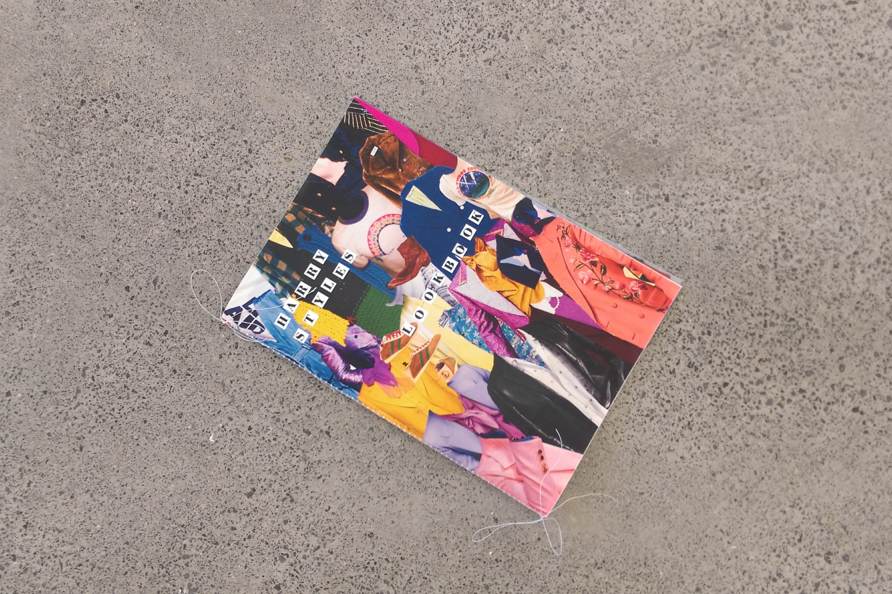
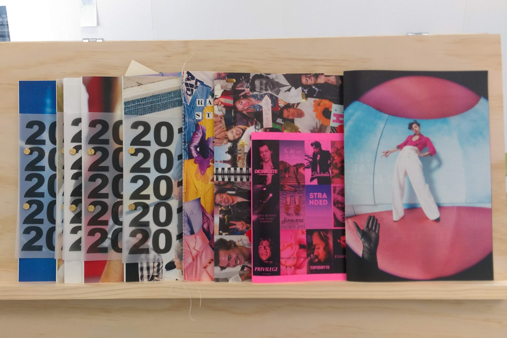
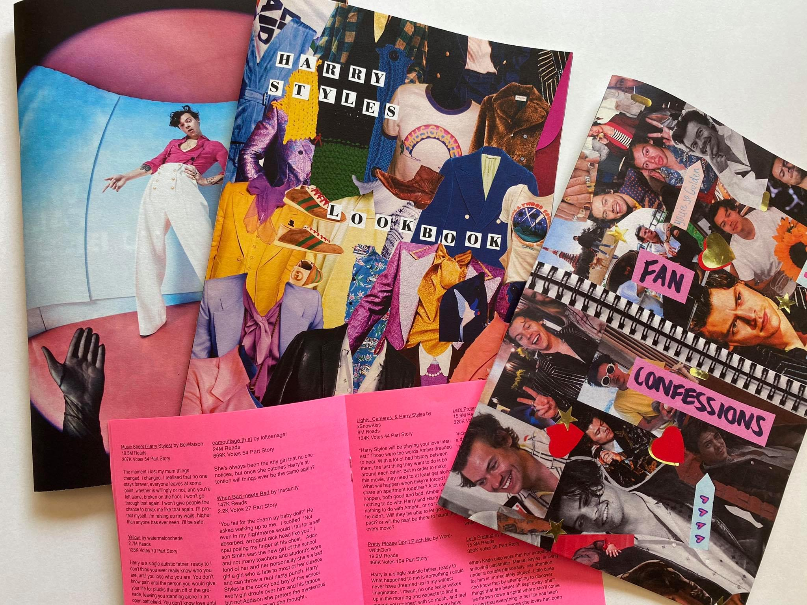
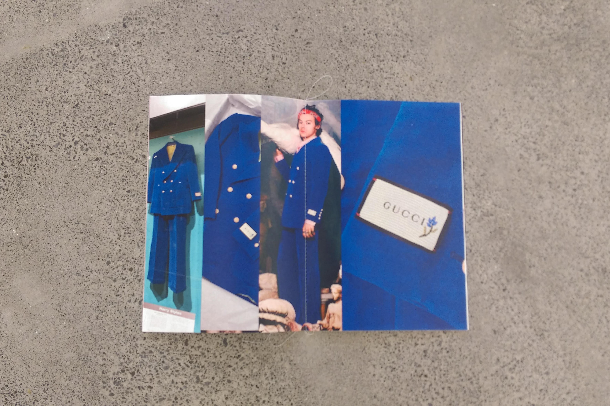
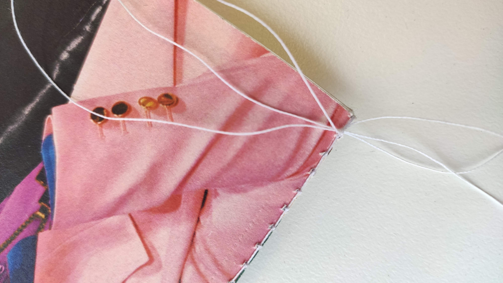

Ally Meredith
+64 210 824 7663
allymeredith99@gmail.com
'Dear Harry'
210x297mm
Series of 10 zines
In this project titled ‘Dear Harry’ I am exploring fandom culture with Harry Styles as my
main subject. Through this exploration I have created a series of 10 fanzines. Each zine
covers a different topic, either about Harry and his career or, from the perspective of his fans.
As Harry has a very passionate fan base, I want to show ways in which they display their
adoration for him, whether through social media, personal messages or fanfiction. I also
have created works that his fans would enjoy looking at and be excited by. For example, zines
that document each year he was in One Direction, so they can see his progress and growth
through the band.
In preparation for this project I have researched fanzine culture that originated in the 70s
punk rock era. I’ve tried to mirror their playful use of text and image to give my zines a more
rugged look. In terms of material choices, I have collaged and scanned layouts and I will be
printing on a variety of different paper stocks, including smaller inserts or folded booklets
that can be pinned on the inside with clips.
@ally_meredith